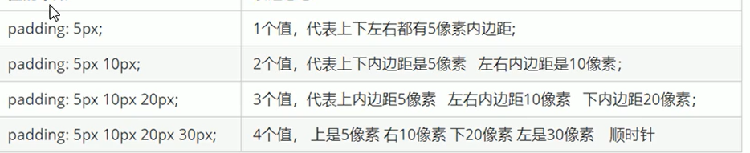

盒子模型组成:border边框，padding内边距，content内容，margin外边距
边框可设置属性：颜色，粗细，边框样式
border:border-width|border-style|border-color
边框的复合写法:border:1px solid red;这三个参数没有顺序
如果只想修饰边框上部则将border改为border-top，其他部位同理。
表格细线边框border-collapse表示相邻边框合并
内容和边框的距离padding-left|right|top|bottom
外边距设置盒子外部距离，用margin控制
可以让块级盒子水平居中，盒子必须指定宽度，并且左右外边距为auto
给行内和行内块元素的父元素加一个text-align:center属性之后就可以居中显示了